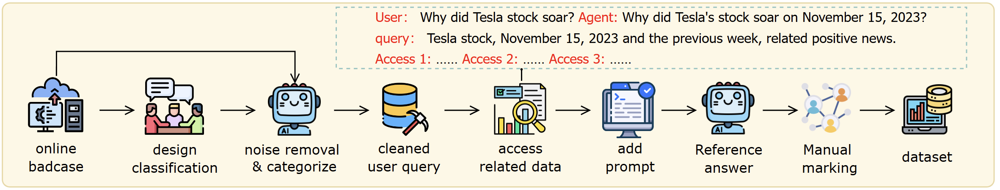
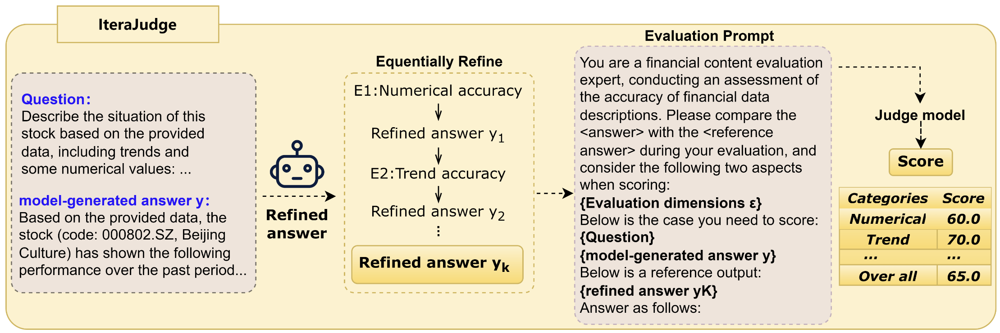
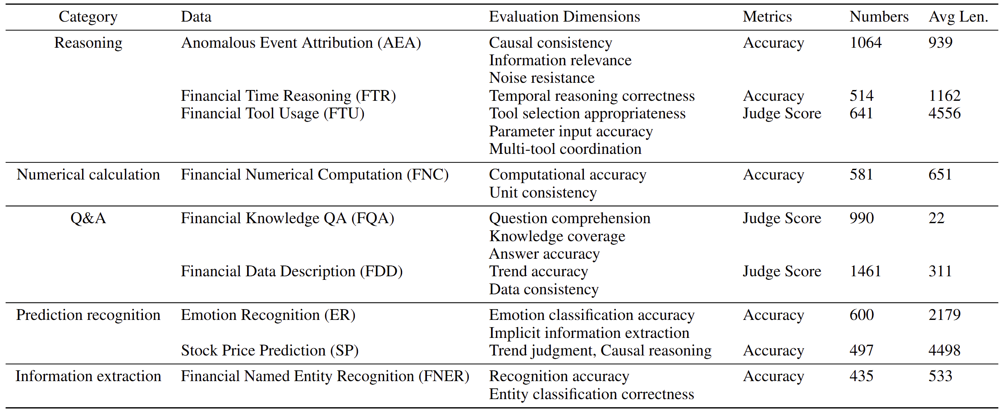
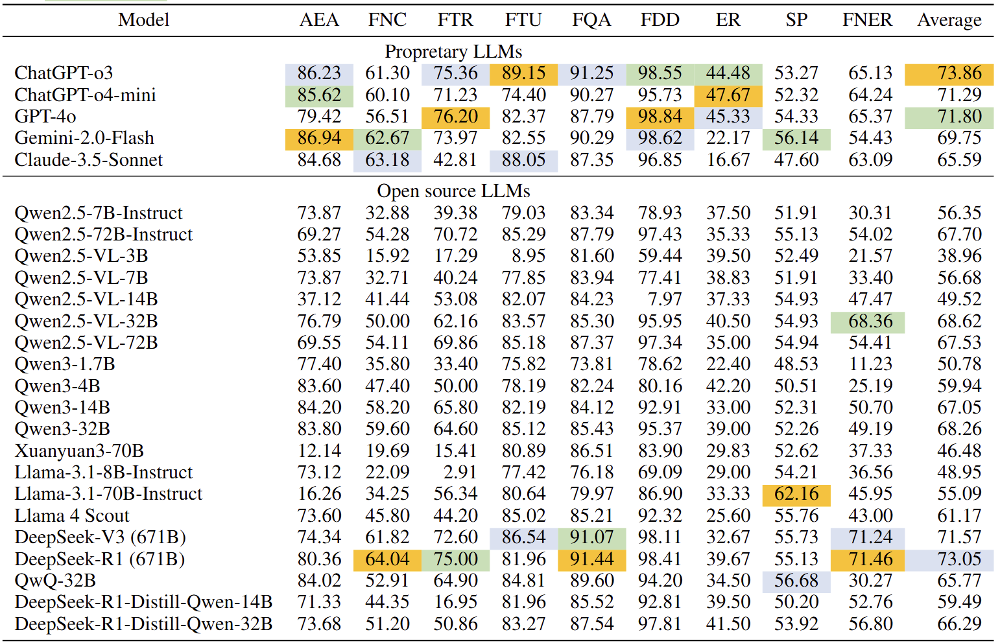

BizFinBench:
BizFinBench:
A Business-Driven Real-World Financial Benchmark for Evaluating LLMs
Abstract
Large language models excel in general tasks, yet assessing their reliability in logic‑heavy, precision‑critical domains like finance, law, and healthcare remains challenging. To address this, we introduce BizFinBench, the first benchmark specifically designed to evaluate LLMs in real-world financial applications. BizFinBench consists of 6,781 well-annotated queries in Chinese, spanning five dimensions: numerical calculation, reasoning, information extraction, prediction recognition, and knowledge-based question answering, grouped into nine fine-grained categories. The benchmark includes both objective and subjective metrics. We also introduce Iterajudge, a novel LLM evaluation method that reduces bias when LLMs serve as evaluators in objective metrics. We benchmark 25 models, including both proprietary and open-source systems. Extensive experiments show that no model dominates across all tasks. Our evaluation reveals distinct capability patterns: (1) In Numerical Calculation, Claude-3.5-Sonnet (63.18) and DeepSeek-R1 (64.04) lead, while smaller models like Qwen2.5-VL-3B (15.92) lag significantly; (2) In Reasoning, proprietary models dominate (ChatGPT-o3: 83.58, Gemini-2.0-Flash: 81.15), with open-source models trailing by up to 19.49 points; (3) In Information Extraction, the performance spread is the largest, with DeepSeek-R1 scoring 71.46, while Qwen3-1.7B scores 11.23; (4) In Prediction Recognition, performance variance is minimal, with top models scoring between 39.16 and 50.00. We find that while current LLMs handle routine finance queries competently, they struggle with complex scenarios requiring cross-concept reasoning. BizFinBench offers a rigorous, business-aligned benchmark for future research. The code and dataset are available at https://github.com/HiThink-Research/BizFinBench.
Overview
• Data Collection
This is the data collection pipeline of BizFinBench. We construct our dataset from real user queries on the iWenCai platform, covering common financial tasks such as time reasoning, numerical computation, and sentiment analysis. Queries are cleaned and categorized using GPT-4o, with underrepresented types augmented for balance. Relevant financial context is retrieved based on the query timestamp, and carefully selected distractors are added to test reasoning ability. All data points are reviewed and validated by senior financial experts to ensure high quality and real-world applicability.

• Evaluation Method
This is the evaluation pipeline on IteraJudge. The framework employs a three-phase pipeline for dimension-decoupled assessment. Starting with an input question and an initial model-generated answer, the framework iteratively refines the answer across a set of predefined evaluation dimensions using a large language model (LLM) with tailored prompts for each dimension. This process generates a sequence of progressively improved answers, providing an interpretable improvement trajectory. The final refined answer serves as an automatically generated quality benchmark. A judge model then evaluates the original answer by comparing it with the refined benchmark in a contrastive manner, assigning a score that highlights dimensional deficiencies based on their differences. This iterative refinement approach enables detailed diagnosis while maintaining contextual consistency throughout the process.

• Statistics
This is the statistics results of BizFinBench. BizFinBench consists of a total of 6,781 entries, encompassing a wide variety of tasks designed to assess model performance across diverse financial challenges. By testing models on these tasks, we aim to evaluate not only their individual capabilities but also their ability to generalize across multiple facets of financial data analysis. The table below provides a detailed breakdown of the dataset, including the evaluation dimensions, corresponding metrics, the number of instances per task, and the average token length per entry. The dataset exhibits significant variability in input length, ranging from just 22 tokens to as many as 4,556 tokens. This broad range reflects the complexity and heterogeneity of real-world financial scenarios and presents a meaningful challenge for models to demonstrate their ability to process both short and long financial texts effectively.

Results on BizFinBench
Our evaluation on the BizFinBench benchmark reveals distinct capabilities of LLMs in the financial domain. The table below shows all results. In the AEA task, Gemini-2.0-Flash achieves SOTA performance with a score of 86.94, closely followed by ChatGPT-o3 (86.23) and ChatGPT-o4-mini (85.62), demonstrating the strong and consistent performance of closed-source models in complex financial understanding. Moreover, proprietary models dominate knowledge-intensive tasks—exemplified by the leading performance of GPT-4o in FDD with a score of 98.84 and the leadership of ChatGPT-o3 in FTU with 89.15. However, open-source models like DeepSeek-V3 (671B) show impressive competitiveness, particularly surpassing GPT-4o (65.37) in FNER with a score of 71.46.
Demonstrations
• Anomalous Event Attribution

• Emotion Recognition

Citation
comming soon